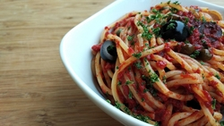

Spagheti recipe

Description
Spagheti is a long, thin, solid, cylindrical pasta.[1] It is a staple food of traditional Italian cuisine.
Ingredients
Steps
- Combine ground beef, onion, garlic, and green pepper in a large saucepan. Cook and stir until meat is brown and vegetables are tender. Drain grease.
- Stir diced tomatoes, tomato sauce, and tomato paste into the pan. Season with oregano, basil, salt, and pepper. Simmer spaghetti sauce for 1 hour, stirring occasionally.